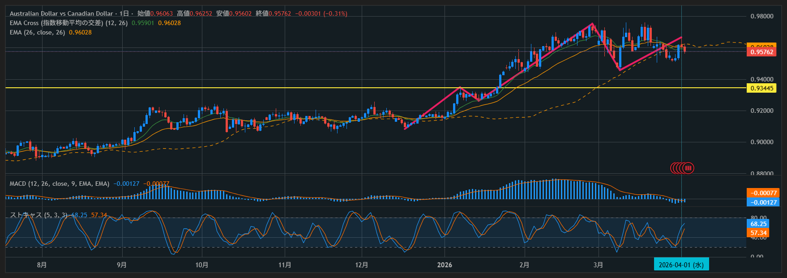
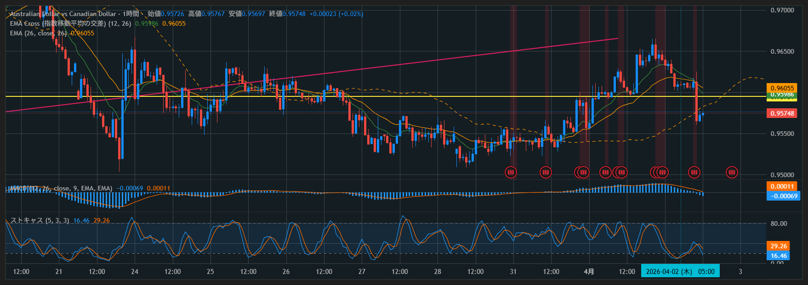

📅 2026-04-02 トレード記録
← トップへ戻る
チャート


分析チェック
項目
評価
日足5波認識
OK
1時間足 押し目形状
NG
ストキャス条件
OK
クロス
OK
足確定（2本前陽線）
OK
エントリー位置
高値圏
損切り位置
適正
利確（10pips）
遵守
結果
Pips：
-10
総合評価：
C
感情ログ
エントリー前：2（やや焦り・取りに行った）
保有中：2（監視継続）
決済後：3（納得＋課題明確）
メモ
【今回の本質】 日足5波は合っていたが、1時間足が押し目ではなく天井形成だった。 【負けの原因】 ・高値圏でのエントリー ・浅い押し（エネルギー不足） ・横ばい＝分配局面を見抜けなかった 【改善ルール】 ・直近高値付近ではエントリーしない ・1時間足で横ばい・上ヒゲ増加は見送り ・「押し目＝再加速の形」以外は入らない 【一言】 タイミングは良い。場所を修正すれば勝てる。